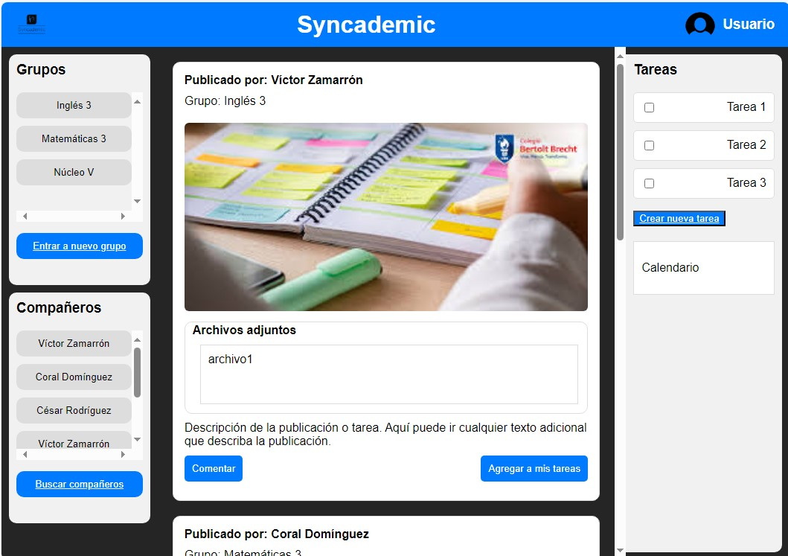
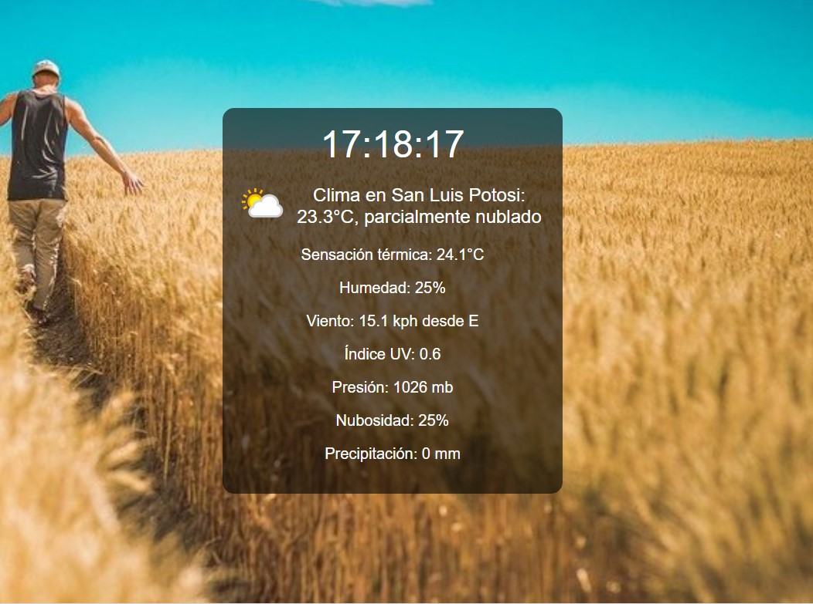

Mis Proyectos

Lector Serial WEB
Deberia de mostrarte la comunicacion serial que quieras (principalmente para placas arduino).
Ver proyecto

Interacción segundo parcial
Proyecto de la materia interacción humano computadora (interfaz de usuario).
Ver proyecto

Reloj Minimalista
Deberia mostrarte la hora (Reutilización de tablets y celulares viejos).
Ver proyecto